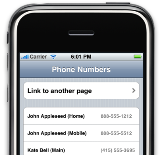

Please note: this article is part of the older "Objective-C era" on Cocoa with Love. I don't keep these articles up-to-date; please be wary of broken code or potentially out-of-date information. Read "A new era for Cocoa with Love" for more.
Heterogeneous cells in a UITableViewController
This post looks at writing a UITableViewController for a table view that contains behaviorally unrelated rows — a common occurrence on the iPhone for tables containing multiple groups. I will present a simple alternative to Apple's UITableViewController template code that will reduce complexity and code as well as refocus areas-of-concern for this heterogeneous arrangement.
Update: If you're interested in approaches to managing and customizingUITableViews andUITableViewCells, you might be interested in seeing my more up-to-date post: UITableView construction, drawing and management (revisited); it represents an evolution and refinement of the ideas presented in this post.
The sample app
I'm going to present the following iPhone Phone Numbers sample app:
The top group contains a simple, statically constructed text link to a child UIViewController. The bottom group contains multi-column display of data from the iPhone's Address Book in rows with no selection behavior.
The focus of the post will be to look at the design of the UITableViewController subclass for the visible table and how it provides two distinct types of table row, with completely different layouts, data sources and behaviors.
Over-use of template code
My reason for writing this post is that I don't think the Apple-provided UITableViewController template code should be used outside of trivial examples. But Apple's example is powerful: when I see other programmers' iPhone code, they rarely use anything else.
How the Apple-provided template works
The most important method that the UITableViewController template provides is:
// Customize the appearance of table view cells.
- (UITableViewCell *)tableView:(UITableView *)tableView
cellForRowAtIndexPath:(NSIndexPath *)indexPath {
static NSString *CellIdentifier = @"Cell";
UITableViewCell *cell = [tableView
dequeueReusableCellWithIdentifier:CellIdentifier];
if (cell == nil) {
cell = [[[UITableViewCell alloc] initWithFrame:CGRectZero
reuseIdentifier:CellIdentifier] autorelease];
}
// Set up the cell...
return cell;
}If you're not familiar with this code sample, I'll quickly explain: when a UITableView needs to display a row, it invokes this method on its data source (the UITableViewController) and this method constructs the UITableViewCell for the row, populates it with data and returns it.
The problem with the template
This code implies a situation where each UITableViewController you create is directly responsible for providing the configuration and behavior of every row in the table.
From a design perspective, there are three distinct issues with this:
- If the table contains more than one type of row, the controller must handle this and each type will increase the number of code paths for construction and behavior.
- There is no abstraction between the
UITableViewControllerand theUITableViewCell, which encourages the programmer towardsUITableViewCellsubclasses to provide row-specific behaviors that they choose to keep out of theUITableViewController(an unnecessary subclass of a view to add controller functionality). - If your program contains multiple
UITableViewControllersthey will each need to replicate this code.
Following the template exactly, UITableViewController subclasses become huge classes, repeated multiple times throughout the program, that spend most of their time managing the behaviors of their cells.
Reducing the responsibilities of the UITableViewController
The best way to improve the UITableViewController is to refocus it on its required behaviors. These are:
- View setup
(There will probably be some top-level behavior to handle in many cases but a list with just one item seemed more impactful.)
To that end, I have reduced the entire code for the table view controller in the sample app down to:
- (void)constructTableGroups
{
NSMutableArray *linkRows = [NSMutableArray array];
[linkRows addObject:
[[[LinkRowCellController alloc]
initWithLabel:@"Link to another page"
controllerClass:[PlainViewController class]]
autorelease]];
NSMutableArray *phoneNumberRows = [NSMutableArray array];
for (NSDictionary *entry in addressBookDataSource.phoneNumbers)
{
[phoneNumberRows addObject:
[[[PhoneNumberCellController alloc]
initWithPhoneNumberData:entry]
autorelease]];
}
tableGroups =
[[NSArray arrayWithObjects:linkRows, phoneNumberRows, nil] retain];
}The class no longer needs to directly implement any of the standard methods and requires just a single construction method.
What I've done is reduced the responsibility of the controller down to establishing the structure of the view and populating it with the data (in this case, data from the addressBookDataSource.phoneNumbers).
Class redesign
The reduction in complexity for the UITableViewController comes from two changes: moving generic behavior into a superclass and specific behavior into child classes.
CellController
The "specific" behavior in this case is row-specific behavior. Row-specific behavior is moved into the "Cell Controllers" (LinkRowCellController and PhoneNumberCellController).
CellController is a protocol. In the sample app, it only contains two methods (tableView:cellForRowAtIndexPath: and tableView:didSelectRowAtIndexPath:) but in a fully fledged application, it would be exanded to further mimic UITableViewDelegate and UITableViewDataSource.
To see how these work, let's look at the cell construction code for LinkRowCellController:
- (UITableViewCell *)tableView:(UITableView *)tableView
cellForRowAtIndexPath:(NSIndexPath *)indexPath
{
static NSString *cellIdentifier = @"LinkDataCell";
UITableViewCell *cell =
[tableView dequeueReusableCellWithIdentifier:cellIdentifier];
if (cell == nil)
{
cell =
[[[UITableViewCell alloc]
initWithFrame:CGRectZero
reuseIdentifier:cellIdentifier]
autorelease];
cell.accessoryType = UITableViewCellAccessoryDisclosureIndicator;
}
// Configure the cell
cell.text = label;
return cell;
}You can see that it's largely the same code that might have appeared in a UITableViewController but offers the following advantages:
- won't grow in behavioral complexity (since it manages just one row type)
- keeps a narrow area-of-concern by connecting a single view element (
cell) to a single piece of data (label)
GenericTableViewController
The "generic" behavior is moved into GenericTableViewController which provides a basic architecture for lazy construction of the tableGroups instance variable and routing of all row-specific behaviors through to the relevant CellControllers.
When tableGroups construction is needed, the method constructTableGroups is invoked, which is the only method required for custom behavior.
Limitations to this approach
This design is only useful in situations where you have the data object for every single row at all times. It is not particularly good in situations where you don't have the data for every row up-front (for example, data fetched from an NSFetchedResultsController).
Bonus features in the sample app
Unrelated to the main content of this article, the sample app also fetches the phone numbers of all contacts from the Address Book using ABAddressBookCreate, ABAddressBookCopyArrayOfAllPeople and ABRecordCopyValue. Have a look at the AddressBookDataSource class in the project if you're curious to see how this is done.
The PhoneNumberCellController shows how to perform custom layout and arrangement in the contentView of a UITableViewCell to achieve a somewhat customized appearance without subclassing. This is trivial stuff but is a reminder to programmers still stuck in the NSCell subclass habit from Mac OS X (you know who you are) that UITableViewCell subclasses are rarely required.
Conclusion
Download the complete code for the sample app in the PhoneNumbers Xcode 3.1 project (34kB).
When writing a post, it's hard for me to know if a topic is too obvious. This topic is certainly at the obvious end of the spectrum but I'm hoping it will nudge a few culprits to add a proper base-class and move their row-specific behaviors into resuable, row-specific classes.
I realize that programmers may face confidence issues when an authoritative source like Apple provides an example. Programmers may avoid obvious improvements because they don't want to question the authority's advice.
Apple's code is just a template and typical of a template, it doesn't force any particular arrangement of data upon you. However, choosing a common data arrangement allows for moving common code to handle that data into a base-class, which can further provide common behaviors throughout your application.
The design pattern of separate CellController implementations to simplify a UITableViewController should apply, in a more generalised way, throughout your programming: you shouldn't have multiple conditionals switching on the same piece of data. In this case, we avoided conditionals switched on the row index by creating an object for each row that contains row-specific behavior. This is object-oriented programming: if you're using switch statements or other compound, data-switched conditionals in your user-interface code, you're probably doing it wrong.
OrderedDictionary: Subclassing a Cocoa class cluster